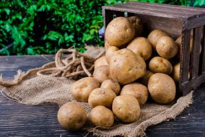

Карто́пля (Solanum tuberosum), діал. бу́льба, бараболя[1] — вид рослин родини пасльонових, поширена сільськогосподарська культура, яку в народі називають «другим хлібом»; одна з найважливіших продовольчих, технічних і кормових культур. У просторіччі часто часто алею називають не вид, а лише бульбоплід картоплі. Українське слово картопля через польське і російське посередництво походить від нім. Kartoffel (раніша форма Turtuffel). Німецьке слово походить від італ. tartufolo, tartufo, що сходить до нар.-лат. *terrae tufer («земляна бульба») і далі до лат. terrae tuber. Закріплення назви за привезеною в XVI ст. з Америки рослиною сталося в староіталійській мові[6].
Німецьке слово «Kartoffel» (картопля) походить від італійського «Tartufo» (трюфель) через зовнішню схожість[7], а в основу слова «трюфель», очевидно, ліг латинський термін «tuber» (бульба), що означає «пухлина» або «шматок», який став «tufer-» й породив різні європейські терміни: французький «truffe», іспанський «trufa», данський «Trøffel», німецький «Trüffel», шведський «tryffel», нідерландський «Trüffel», польський «trufel» і хорватський «tartuf». У португальській мові слова «trufa» і «túbera» означають у перекладі «горби» і є синонімами, останній термін є ближчим до латинського терміну.